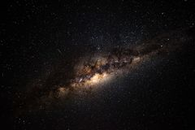
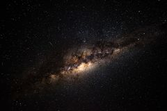
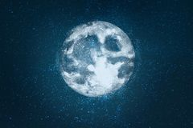
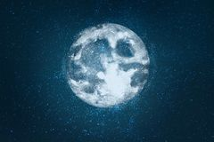

Παράδειγματα εικόνων υπερσύνδεσης
1η εικόνα
 Εικόνα 1. Γαλαξίας

Εικόνα 1. Γαλαξίας (μικρογραφία και υπερσύνδεσμος)
Εικόνα 1. Γαλαξίας

Εικόνα 1. Γαλαξίας (μικρογραφία και υπερσύνδεσμος)
2η εικόνα
 Εικόνα 2. Ωκεανός
Εικόνα 2. Ωκεανός (μικρογραφία και υπερσύνδεσμος)
Εικόνα 2. Ωκεανός
Εικόνα 2. Ωκεανός (μικρογραφία και υπερσύνδεσμος)
3η εικόνα
 Εικόνα 3. Φεγγάρι

Εικόνα 3. Φεγγάρι (μικρογραφία και υπερσύνδεσμος)
Εικόνα 3. Φεγγάρι

Εικόνα 3. Φεγγάρι (μικρογραφία και υπερσύνδεσμος)